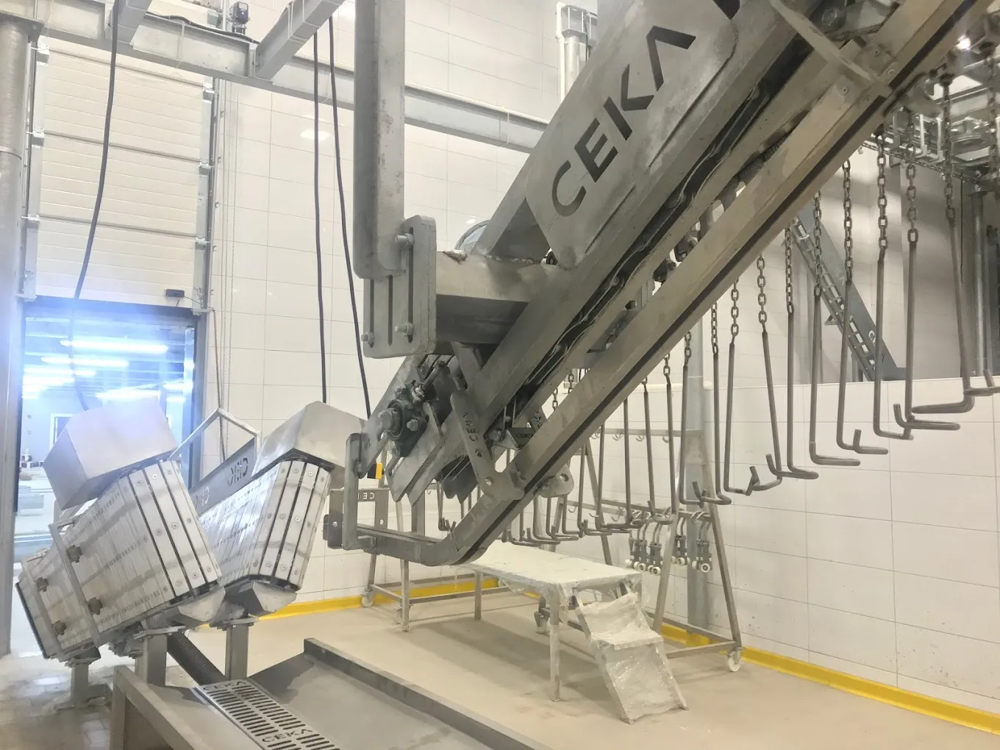

Kurban Kesim Yerleri: KÜÇÜK BÜTÇE
Yüksek Etki
Kurban Kesim Yerleri, Belediye, kooperatif veya küçük et işletmeleri için kompakt ama tam donanımlı mezbaha tesisleri kuruyoruz. Sınırlı alan ve bütçeyle, standartlara uygun hijyenik bir kesimhane sahibi olmanın en kısa yolu.

Kompakt Kesim Hattı
Küçük alana özel paslanmaz çelik ekipmanKurban Kesim Yerleri için Her şey
Her modül küçük alana ve düşük kapasiteye göre boyutlandırılır. Paslanmaz çelik gövde, kolay temizlik ve uzun ömür önceliğimizdir.
Büyükbaş Kesim Hattı
Küçük ölçekli tesisler için kompakt kanama, deriyüzme ve karkas taşıma ekipmanlarından oluşan tek hatlı büyükbaş çözümü.
- Saatte 5–15 büyükbaş kapasitesi
- Sabitleme aparatı
- Karkas taşıma rayı
Küçükbaş Kesim Hattı
Kuzu, koyun ve keçi için kompakt askı ve kanama düzeni. Sınırlı alana sığan, verimli çalışan hat tasarımı.
- Saatte 20–60 küçükbaş kapasitesi
- Kanama hattı & askı sistemi
- İç organ ayrım tezgâhı
Parçalama Ekipmanları
Manuel veya yarı otomatik karkas testere ve parçalama tezgâhı ile küçük hacimli akışa uygun, hijyenik çalışma alanı.
- Paslanmaz parçalama tezgâhı
- Karkas testere
- Tartım istasyonu
Soğuk Oda & Depolama
Küçük kapasiteye uygun karkas askı raylı soğuk oda çözümü. Modüler panel yapısıyla mevcut binaya da entegre edilebilir.
- İhtiyaca göre modüler soğuk oda
- Karkas askı ray sistemi
- Isı yalıtımlı sandviç panel
Az alan, düşük yatırım, yüksek hijyen standardı
Küçük ölçekli mezbaha; sınırlı bütçe ve alanla kaçak kesimi önlemenin, yerel et arzını güvence altına almanın ve gıda mevzuatına uyum sağlamanın en pratik yoludur.
Belediye kesimhaneleri, köy kooperatifleri ve küçük çaplı et işletmeleri için tasarlanan bu tesisler, büyük mezbahalarla aynı hijyen ve denetim standartlarını karşılarken çok daha az yer kaplar ve daha hızlı devreye alınır.
Ceka Mezbaha olarak; saha ölçümü, yerleşim planı, ekipman seçimi, imalat ve montaj süreçlerini tek elden yönetiriz. Tesis tesliminde operatör eğitimi ve bakım planını da projeye dahil ediyoruz. Böylece ilk günden verimli, denetlenebilir ve sürdürülebilir bir operasyona kavuşursunuz.
Kompakt Tasarım
Küçük parsellere uygun akış planlaması ve yerleşim.
Hijyen & Drenaj
Eğimli zemin, CIP hattı ve bariyer tasarımı.
Düşük Yatırım
Bütçeye göre aşamalı büyüme imkânı sunan modüler yapı.
Soğuk Zincir
Kapasiteye uygun küçük soğuk oda ve askı ray sistemi.
İhtiyacınıza göre doğru büyüklük
Küçük ölçekli projelerde kapasite; günlük kesim adedi, soğuk oda hacmi ve personel sayısı birlikte değerlendirilerek belirlenir.
500 – 2.000 karkas/yıl
Köy kesimhaneleri, kooperatifler ve küçük kasaplar için ideal başlangıç paketi. Minimum alanda tam hijyen altyapısıyla yasal gereklilikleri karşılar.
- Tek büyükbaş veya küçükbaş hattı
- İhtiyaca göre planlanan soğuk oda
- Temel hijyen bariyeri paketi
- Manuel akış, kolay temizlik
2.000 – 8.000 karkas/yıl
Belediye kesimhaneleri ve küçük et işletmeleri için daha geniş kapasite. Büyükbaş + küçükbaş kombine hat ve genişletilmiş soğuk oda seçeneği.
- Kombine büyükbaş + küçükbaş hattı
- Genişletilebilir soğuk oda kurgusu
- Tam hijyen bariyeri & sterilizasyon
- İleride kapasite artışına hazır altyapı
Keşiften devreye alımına 5 adımda küçük ölçekli tesis
Tüm aşamalar aynı ekip tarafından yürütülür; saha gerçekliği mühendislik kararlarını besler, teslim sonrası eğitimle operasyon güvence altına alınır.
Ücretsiz Keşif
Saha ölçümü, mevcut altyapı ve kapasite ihtiyacının yerinde değerlendirilmesi. Tahmini maliyet görüşmesi.
Yerleşim & Tasarım
Kompakt akış şeması, yerleşim planı ve ekipman listesinin hazırlanması. Onay sonrası imalat başlar.
İmalat
Kendi atölyelerimizde paslanmaz çelik imalat. Tüm ekipmanlar teslimat öncesi fabrikada test edilir.
Montaj & Devreye Alma
Saha montajı, elektrik ve su bağlantıları, hijyen testleri. Küçük tesislerde montaj genellikle 1–3 haftada tamamlanır.
Eğitim & Destek
Operatör eğitimi, temizlik ve bakım talimatları. Garanti kapsamında teknik servis ve yedek parça desteği.
Gelecekte Büyüme
Modüler altyapı sayesinde ihtiyaç arttığında hat uzatma, soğuk oda büyütme veya otomasyon ekleme kolaylığı.
Küçük tesis, büyük standart
Küçük ölçekli tesislerde de gıda mevzuatı, veteriner denetimi ve HACCP gereklilikleri geçerlidir. Tasarımlarımızı bu standartlara tam uyumlu olarak kuruyoruz.
Deneyimli Ekip
Belediyeden köy kesimhanesine 35+ projede anahtar teslim başarı.
Kendi Üretim Gücü
Paslanmaz imalat kendi atölyemizde: tutarlı kalite ve kısa teslimat.
Büyümeye Hazır Altyapı
Başlangıç paketinden daha büyük kapasiteye geçiş sorunsuz olur.
Satış Sonrası Destek
Uzaktan destek, yerinde müdahale ve yedek parça tedarik garantisi.
Küçük ölçekli mezbaha kurulumunda merak edilenler
Küçük ölçekli mezbaha projenizi birlikte hayata geçirelim.
Alan ölçüsünüzü, günlük kesim hedefinizi ve bütçenizi paylaşın; 7 iş günü içinde yerleşim önerisi ve ön teklif hazırlayalım. Keşif ziyareti ücretsizdir.